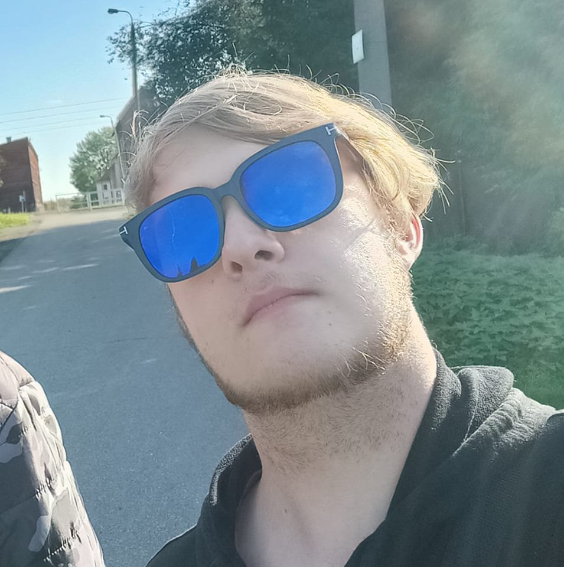

Hello, I'm Japkozjad.
Being a musician is a dream come true for me. It is an amazing feeling to create music, share it with others and watch it come to life. It inspires me to be the best version of myself.
About Me
Japkozjad is a small growing musician artist, specializing in Progressive House and Future House music. Japkozjad has also been a faithful member of the MLP fandom since 2017, which shows his passion for music and wide interest in various genres. His songs are always full of emotion and express his personal experiences and thoughts. Creating music is a passion and a way for Japkozjad to express himself. His songs are full of emotions and energy, and his talent and dedication allow him to continue his career and provide his fans with an unforgettable musical experience.
Discography
GET IN TOUCH
japkozjad@gmail.com
DISCORD
japkozjad#4728
Copyright (C) 2023 Japkozjad. Website core by RaDzik.